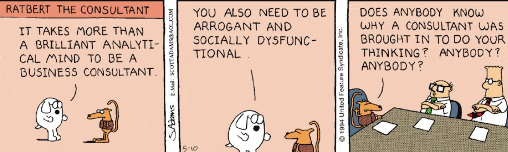

For the past two years, we, at Inscripta AI, have been working with organizations looking to integrate NLP/AI into their workflows and solutions (“Fast-tracking AI Integration” is our mission!). This article is a brief summary of our observations on some common client misperceptions with respect to recent developments in NLP, especially the use of large-scale models and datasets. As such, these points are relevant primarily to business contexts where AI integration is in its early stages, and not to research projects, or situations where it is a mature component of the solution. A better appreciation of these issues, we believe, can significantly improve the chances of successful AI implementation in businesses, whether executed in-house or outsourced.
BERT isn’t all you need
With deep learning, and the transformers revolution (BERT, GPT, etc.), off-the-shelf models are substantially better than they were around 5 years ago. The threshold for business viability is therefore breached more often. Nevertheless, in our experience, these models can almost always be substantially improved for a specific business problem (
a recent example from an ethical NLP paper by Jiang et al.
). Clients often ask us whether we have a BERT solution (a decade ago, it used to be statistical or Bayesian models), and whether we could quickly try it on their problem: “Does BERT work on this problem? Yes or no?”. Unfortunately, this sometimes leads to a premature “no” when the answer may well have been “yes”, with a few weeks’ effort. BERT by itself is no panacea, and transformers are not a competitive advantage. Moreover, deploying such models without the right safeguards may even lead to disastrous consequences, as when a GPT-3-based chatbot told a mock patient to kill himself, leading Yann LeCun to
comment
that “people have completely unrealistic expectations about what large-scale language models such as GPT-3 can do”. Worth paying attention.
The original metric is not the eternal metric
Transfer-learning and cross application of large prebuilt models lead to faster system development and deployment. However, the base models are often trained on tasks slightly different from the target application, resulting in lower accuracies. For instance,
recent research) recent research
shows that large NLI models that are commonly used for classification depend on spurious patterns, which may impede real-world performance. Another common scenario we encounter is where the business workflow requires near-100% recall at an extraction or search task with best possible precision, or vice-versa, and the off-the-shelf model is tuned on a different metric (say, F1), again resulting in poor task performance. Domain experts and NLP specialists should work together, fairly early in the project, on developing a metric that is suitable to the task at hand.
More data is neither good nor bad, but curation makes it so
The incremental value of training data is uncertain. Collecting and annotating a lot of data haphazardly and uncritically (“take it as it comes” from the internet), or simply amassing historical and potentially irrelevant data, might sometimes produce passable results. Nonetheless, a keen eye to the
task-appropriateness
of collected data and the effectiveness of planned annotation is crucial to avoiding useless data collection. In one instance, we discovered that a poorly performing helpdesk chatbot had arbitrary conversational data from movie scripts and the Ubuntu dialogue dataset as part of its training data (We suspect the chatbot “frankly didn’t give a damn” about user problems). Other problems that emanate from
learning-from-the-crowd
include: the NLP algorithm learning, at best, useless, but potentially hateful conversational speech. Yet another problem could be
learnt biases
in recommendations, which might end up having a detrimental (even life-changing) effect on the individuals affected by the bias. Given the potential for scaling effects, this could affect entire sub-communities, with little or no recourse to recompense.
Errors/biases that are inevitable even in cutting-edge models might not be acceptable in business applications
Endless tinkering with technique yields poor returns
Experimenting with different data, adapting business workflows or exploring the space of viable business solutions (using some technique that works reasonably well) is often more potent than spending too much time on the basic techniques or models used. A recent example from
stock market prediction
research shows how rethinking data and process can be effective. A caricature but mostly true: Once a problem is formulated and benchmark data is established, workflow and data are held constant while technique is experimented with (e.g., most research work), while at the beginning of an NLP/AI pilot or integration, it is useful to think of technique as fixed and data/processes as variable (Listen to
Andrew Ng
making this point about moving from model-centric to data-centric AI). Reimagining business processes calls for greater efforts at convincing stakeholders, but is usually far more transformative than following
a plug-and-play approach to AI integration
.
All NLP and no domain expertise makes a mere toy
The evolution of data science and data scientists was based on the realization that good business solutions result from interweaving domain and technological expertise. In practice this is
this is rarely achieved
, especially at the early stages of an NLP/AI integration project. Therefore, simply handing off the problem to the tech team and waiting to evaluate at the end of the project, is most likely a recipe for failure, or a path to a generic solution that probably won’t create competitive advantage. Domain understanding
precedes choice of technology
, sources of data, and metrics for evaluation. We have found that incorporating business judgments at every stage has been key to our success at complex projects. While modern NLP tools have impressive off-the-shelf performance, the importance of a deep learning of the domain should not be overlooked.

Don’t let the technology consultant do your thinking (From: DILBERT by Scott Adams)
Premature data-drivenness is the root of all … well, it’s sometimes counterproductive
Most people are on the data-driven bandwagon these days, and the risks of not being data-driven are fairly well-understood. Overzealous data-drivenness, on the other hand, is a silent threat. We are often asked to estimate the accuracy of our baseline model right at the outset, when it is not clear that the available test data is good enough for a reliable evaluation. For instance, we were once asked to measure the accuracy of a sentiment classifier on test data where annotator disagreement turned out to be over 20%. It is important to understand that creating effective benchmarking data
is arduous work
. Being data-driven with bad-quality data is not such a great idea.
There is no penalty for simplicity
Porting and generalizing existing deep (supervised) learning models to
real-world deployments is fraught with problems
. While there are growing efforts at integrating deep learning with reinforcement learning,
logical reasoning
,
causality
, etc., in most business contexts today, it is still useful to
employ
certain traditional techniques for multi-step reasoning, cross-component checks, bias correction and other business logic, combined with deep learning models for core prediction tasks. Moreover, for components that are “easy” from a machine learning perspective, or at the early stages of development, it might be helpful to use simpler (preferably explainable) models and heuristics that can be replaced at a later stage with more complex and powerful black-box models if the trade-offs are meaningful.
Get in Touch